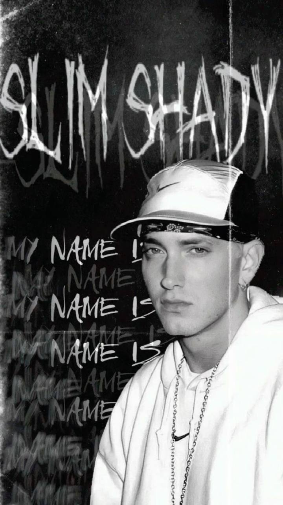

Эминем

Ранняя жизнь
Разнообразием музыкальных жанров, особенно хип-хопом и рэпом, которые сформировали их неповторимый стиль в дальнейшей жизни.
Основные этапы карьеры
- Выпустил дебютный альбом в возрасте 20 лет, который мгновенно стал успешным.
- Выиграл несколько крупных музыкальных наград, включая «Лучший рэп-альбом» и «Артист года».
- Сотрудничал с ведущими артистами индустрии, расширяя их охват и влияние.
Личная жизнь
Вне музыки артист увлечен тем, чтобы отдавать долг обществу. Они работали с несколькими благотворительными организациями.